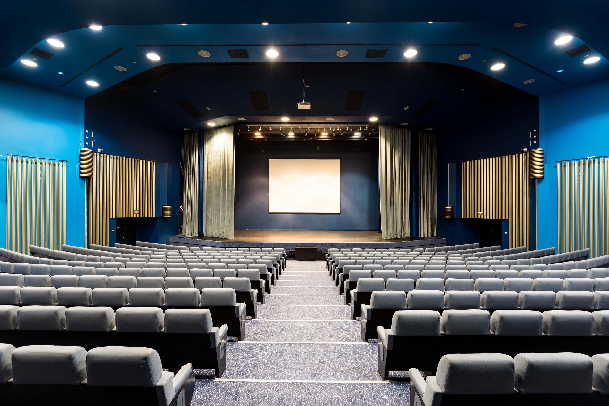
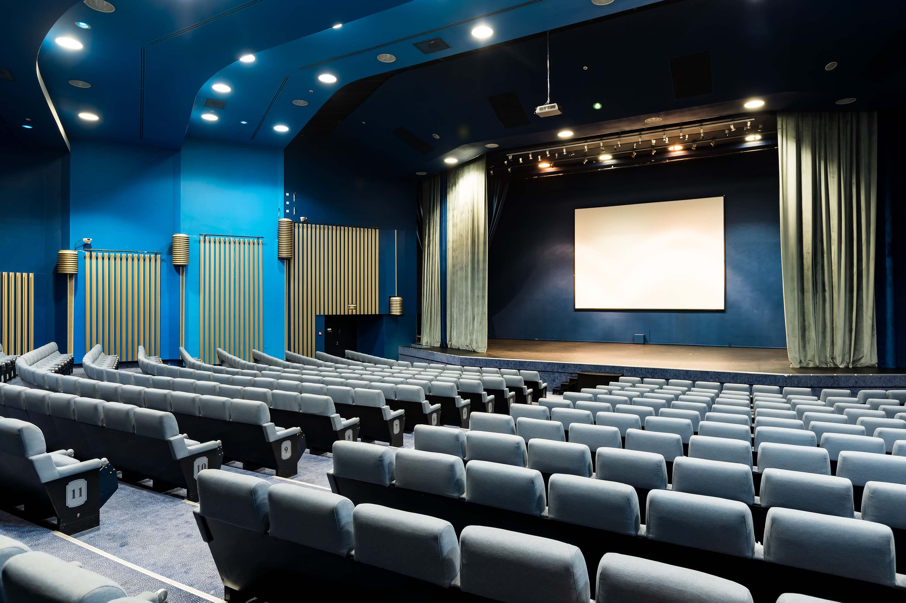
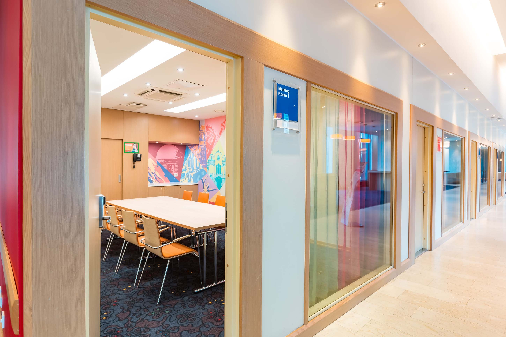
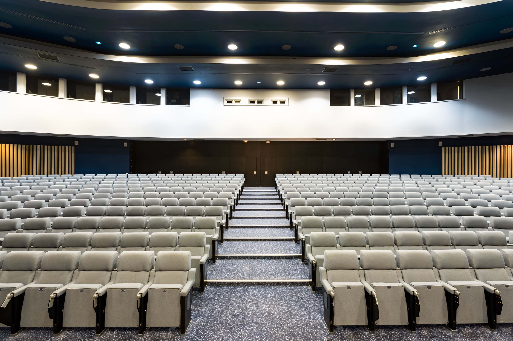
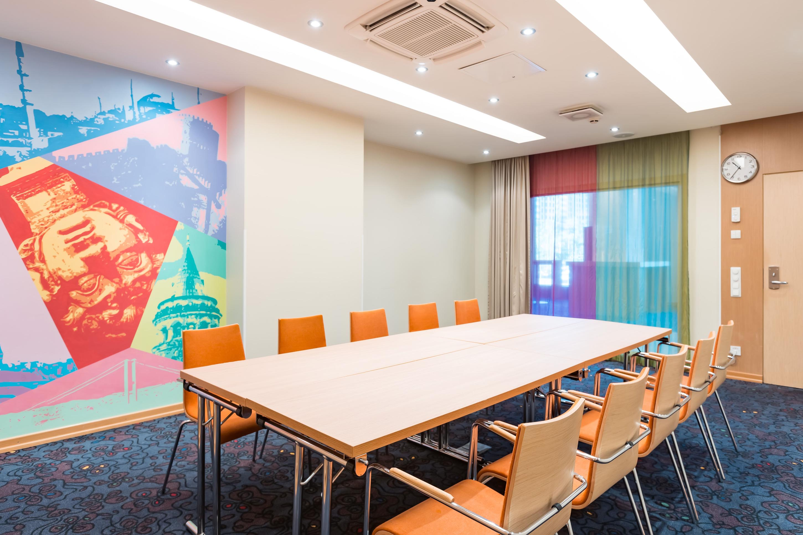

<section id="place" class="main__place place" data-name="section-4" data-bg="#821f09">
	<div class="place__wrapper">
		<div class="place__block-description">
			<h2 class="place__title subtitle">Место встречи</h2>
			<div class="place__description-body">
				<div class="place__text">
					<p class="place__address">Санкт-Петербург, Площадь победы 1</p>
					<p>
						Отель Park Inn by Radisson Pulkovskaya Hotel & Conference Centre St Petersburg находится на Московском
						проспекте с его красивейшей центральной аллеей и предлагает удобный доступ к аэропорту Пулково (LED),
						расположенному всего в 9 км. Окружен элегантными историческими зданиями, зелеными парками, модными торговыми
						центрами и популярными ресторанами.
					</p>
					<p>
						Конгресс-холл вмещает до 600 гостей. Банкетный зал Paulaner вместимостью до 100 человек расположен в
						ресторане-пивоварне Paulaner, вмещающем до 600 гостей. Ресторан Kaminn привлекает гостей настоящим камином и
						вмещает 120 человек, а в ресторане Atrium может поместиться от 50 до 350 посетителей
					</p>
				</div>
				<div class="place__buttons">
					<a title="Купить билет" href="#price" class="place__button button">Принять участие</a>
					<a href="https://www.radissonhotels.com/ru-ru/booking/room-display?checkInDate=2023-06-17&checkOutDate=2023-06-20&adults%5B%5D=2&children%5B%5D=0&searchType=pac&promotionCode=SHARMM&voucher=&brandFirst=pii&hotelCode=RULEDPUL"
						title="Забронировать номер в отеле" target="_blank" class="place__button button">Забронировать номер
						в отеле</a>
					<a href="https://www.google.com/maps/place/Park+Inn+by+Radisson+Pulkovskaya/@59.8442227,30.3137002,16z/	data=!4m9!3m8!1s0x4696311c96c86847:0xc3775861a2071276!5m2!4m1!1i2!8m2!3d59.8425633!4d30.3186681!16s%2Fm%2F0g59mpd?entry=ttu"
						title="Адрес места проевдения Всероссийского женского бизнес Форума" target="_blank"
						class="place__button-address button">Посмотреть на карте</a>
				</div>
			</div>
		</div>
		<div class="place__block-slider" data-aos="flip-right">
			<div class="place__slider-container">
				<div class="swiper mySwiper">
					<div class="swiper-wrapper">
						<div class="swiper-slide">
							
						</div>
						<div class="swiper-slide">
							
						</div>
						<div class="swiper-slide">
							
						</div>
						<div class="swiper-slide">
							
						</div>
						<div class="swiper-slide">
							
						</div>
					</div>
					<div class="swiper-button-next"></div>
					<div class="swiper-button-prev"></div>
					<div class="swiper-pagination"></div>
				</div>
			</div>
		</div>
	</div>
</section>